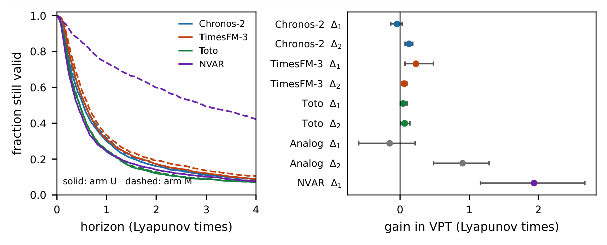

TL;DR
Given the full state of a chaotic system, zero-shot time-series foundation models move their forecasts but gain almost no predictability: they recover at most 6.2% of the coupling gain that a small reservoir computer fitted on the same 512 points obtains.
Abstract
A forecaster continues a series; a simulator propagates a state. Zero-shot time-series foundation models (TSFMs) now accept multivariate input, but whether they treat the other channels as the state of a coupled system or as further patterns to continue has not been tested. We run a pre-registered, paired experiment on 67 chaotic ODEs from the dysts collection: every target coordinate is forecast 512 steps from a 512-point context under three arms - the coordinate alone (U), all d coordinates jointly (M), and the coordinate together with the other coordinates taken from a segment of the same trajectory tens of Lyapunov times away, which keeps them on the same attractor and at the same token count but destroys the coupling (C). Measured in valid prediction time, the full state buys Chronos-2 -0.05 Lyapunov times (95% CI [-0.14, +0.03]), TimesFM-3 +0.22 [+0.07, +0.48] and Toto +0.04 [+0.00, +0.10], while a next-generation reservoir computer fitted on the same 512 points gains +1.94 [+1.16, +2.68] and outscores every foundation model in any arm. The models are not blind to the extra channels - their forecasts move by 0.24-0.47 context standard deviations, and the true state beats the decoupled one for all three - yet they recover at most 6.2% of NVAR's coupling gain (37% of the weaker analog reference's); on the secondary metric all three do gain, Chronos-2 included. On the road from forecasting to world modelling, attending across channels is not yet buying the predictability that the state contains.
Results

Paper
Download PDF (12 pages)
BibTeX
@inproceedings{ma2026state,
title = {State or Pattern? Do Zero-Shot Time-Series Foundation Models Use the Full State When Simulating Chaotic Systems?},
author = {Qinzhen Ma and Jialin Wu and Qingxi Meng and Shichen Tang},
booktitle = {NeurIPS 2026 Workshop on Foundation Models for Temporal Systems},
year = {2026}
}